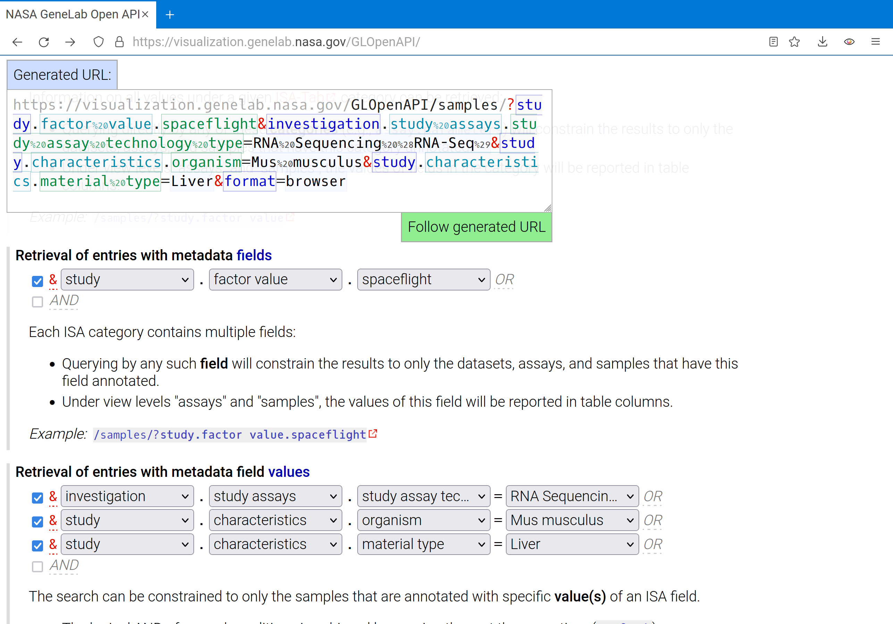
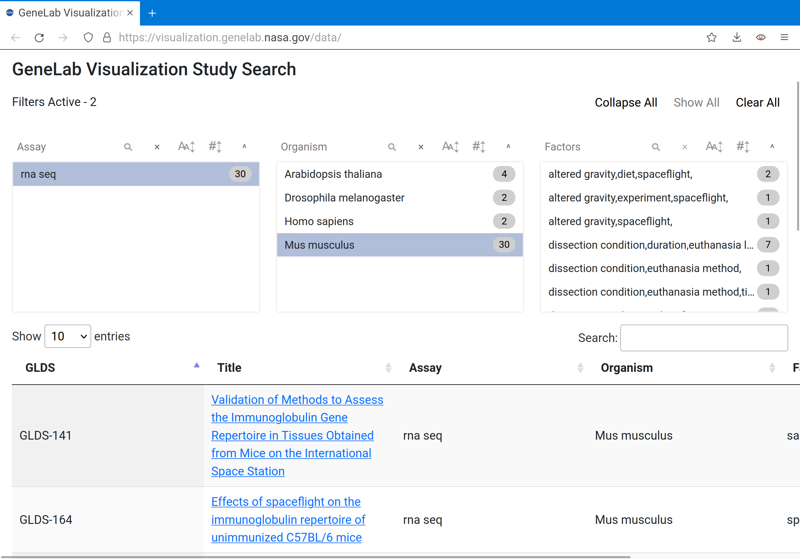

GLOpenAPI overview
Links
GLOpenAPI landing page: https://visualization.genelab.nasa.gov/GLOpenAPI/
GitHub repo: https://github.com/LankyCyril/GLOpenAPI
Visualization portal (uses the API internally): https://visualization.genelab.nasa.gov/data/
Weill Cornell Medicine, NASA GeneLab, NASA Ames, Alidyne Consulting, KBR
Metadata
The GeneLab data repository (genelab-data.ndc.nasa.gov) stores metadata
in the ISA-Tab format (isa-specs.readthedocs.io). These are structured
tabular files whose contents are not directly queriable.
GLOpenAPI processes these ISA-Tab records and converts them into a collection of queriable MongoDB documents.
Key-value pairs in queries follow ISA-Tab conventions (for example, key "study.characteristics.organism", value "Mus musculus").
Interactive interface
The landing page of the API provides documentation mixed with a live query builder.
One of the output formats for tables is "browser" which allows further navigation and inspection through an interactive UI.
Link: https://visualization.genelab.nasa.gov/GLOpenAPI/

Example query:
https://visualization.genelab.nasa.gov/GLOpenAPI/samples/
?study.factor value.spaceflight
&investigation.study assays.study assay technology type=RNA Sequencing (RNA-Seq)
&study.characteristics.organism=Mus musculus
&study.characteristics.material type=Liver
&file.datatype=unnormalized counts
&format=browser
Other formats, like "csv", "tsv", "json" can be ingested programmatically, for example, in Python:
Data
When there's underlying data associated with the metadata query (for example, a user also queries for "file.datatype=unnormalized counts"),
one can query for data directly. If, like unnormalized counts, the data is allowed to be merged across multiple datasets,
a merged table will be returned. Note multiple accession and assay names in the header of the example table.
Example query:
https://visualization.genelab.nasa.gov/GLOpenAPI/data/
?study.factor value.spaceflight
&investigation.study assays.study assay technology type=RNA Sequencing (RNA-Seq)
&study.characteristics.organism=Mus musculus
&study.characteristics.material type=Liver
&file.datatype=unnormalized counts
&format=browser

Once again, the same can be done programmatically:

Other supported data formats
The GeneLab repo hosts raw and preprocessed data, such as fastq files, PCA plots,...
All of these data can be requested through the API by supplying the appropriate "file.datatype" value.
When such data is tabular in nature, e.g. differential expression results, it can also be returned as a table:
Example query:
https://visualization.genelab.nasa.gov/GLOpenAPI/data/
?id=GLDS-4
&file.datatype=differential expression
&format=browser
GLOpenAPI powers the backend of the GeneLab visualization portal
Link: https://visualization.genelab.nasa.gov/data/

Link: https://visualization.genelab.nasa.gov/data/GLDS-4
Roll-your-own analyses
Of course, the API can also be leveraged in custom analysis pipelines.
Basic Jupyter notebook: https://github.com/LankyCyril/GLOpenAPI/blob/master/examples/heatmap.ipynb